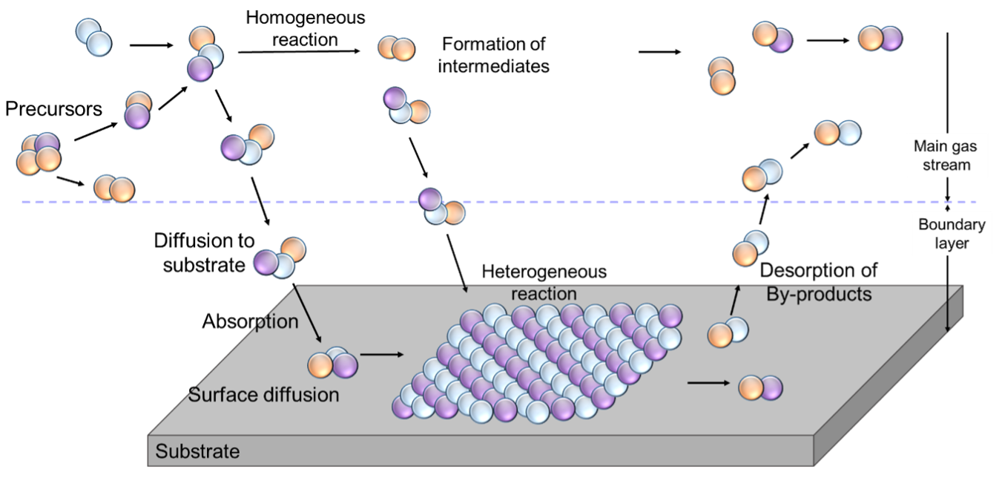
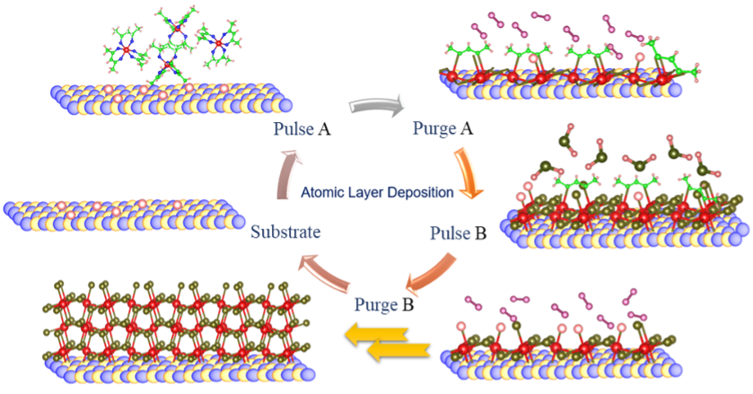
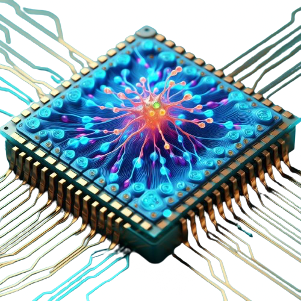
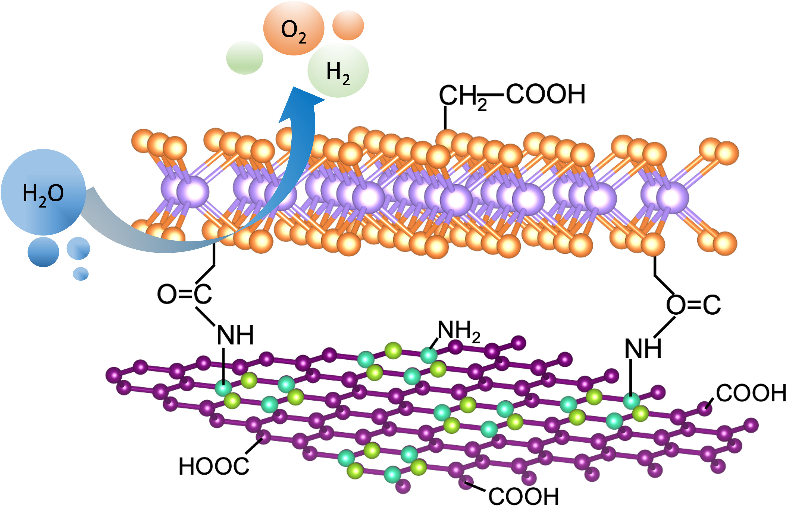

RESEARCH VISION & INTERESTS
The vision is to lead a transformative journey in materials science, establishing clear criteria to uncover the elusive mechanisms governing the Insulator-Metal transition, with a special focus on harnessing the potential of thin films. This endeavor aims to unlock a wealth of materials poised to revolutionize neuromorphic computing. Additionally, it involves developing advanced tools tailored to unraveling these complex mechanisms, thereby enhancing our understanding and capabilities in neuromorphic computing. By seamlessly blending theoretical insights with experimental finesse, this vision promises to usher in a new phase where materials innovation drives remarkable advancements, reshaping industries and propelling scientific progress.
Thin films
Thin films growth by various methods such as chemical vapor deposition (CVD), atomic layer deposition (ALD) and sputtering


Device fabrications
Tools in nanotechnology (electronic and optoelectronic devices) and neuromorphic computing

2D materials
Covalently cross-linked materials of 2D layers
